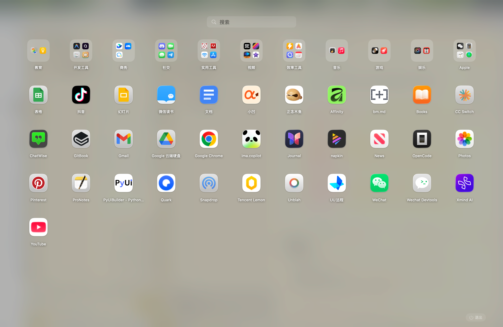

QuickLaunch
A fast, native app launcher for macOS
⌘⇧Space to launch

Features
🎨
Beautiful UI
Full-screen with blurred wallpaper
📁
Folders
Drag to create folders
🔍
Search
Real-time with pinyin support
✨
Auto Organize
One-click categorization
⌨️
Hotkey
⌘⇧Space from anywhere
🔄
Auto Detect
New apps appear automatically